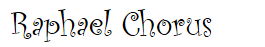

라파엘 워십
예배 순서
- 묵도
- 신앙고백
- 찬송가 272장 _다같이
- 대표기도 _알토 김명원
- 찬양 "내 영혼이 은총입어" _최주일 목사님
- 성경봉독_ 로마서 8장 28절~30절
- 찬양 "그의 빛 안에 살면" _라파엘코러스
- 설교_ 최주일 목사님
- 찬양 "성 프란시스의 기도" _라파엘코러스
- 찬양 "여정" _최주일 목사님
- 찬송 "주의 기도" _다같이 일어서서
- 축도
찬송가 272장
1. 고통의 멍에 벗으려고 예수께로 나갑니다 자유와 기쁨 베푸시는 주께로 갑니다 병든 내 몸이 튼튼하고 빈궁한 삶이 부해지며 죄악을 벗어 버리려고 주께로 갑니다
2. 낭패와 실망 당한 뒤에 예수께로 나갑니다 십자가 은혜 받으려고 주께로 갑니다 슬프던 마음 위로받고 이생의 풍파 잔잔하며 영광의 찬송 부르려고 주께로 갑니다
3. 교만한 맘을 내버리고 예수께로 나갑니다 복되신 말씀 따르려고 주께로 갑니다 실망한 이 몸 힘을 얻고 예수의 크신 사랑 받아 하늘의 기쁨 맛보려고 주께로 갑니다
4. 죽음의 길을 벗어나서 예수께로 나갑니다 영원한 집을 바라보고 주께로 갑니다 멸망의 포구 헤어나와 평화의 나라 다다라서 영광의 주를 뵈오려고 주께로 갑니다
말씀
“우리가 알거니와 하나님을 사랑하는 자 곧 그의 뜻대로 부르심을 입은 자들에게는 모든 것이 합력하여 선을 이루느니라
하나님이 미리 아신 자들을 또한 그 아들의 형상을 본받게 하기 위하여 미리 정하셨으니 이는 그로 많은 형제 중에서 맏아들이 되게 하려 하심이니라
또 미리 정하신 그들을 또한 부르시고 부르신 그들을 또한 의롭다 하시고 의롭다 하신 그들을 또한 영화롭게 하셨느니라” (롬 8:28-30)